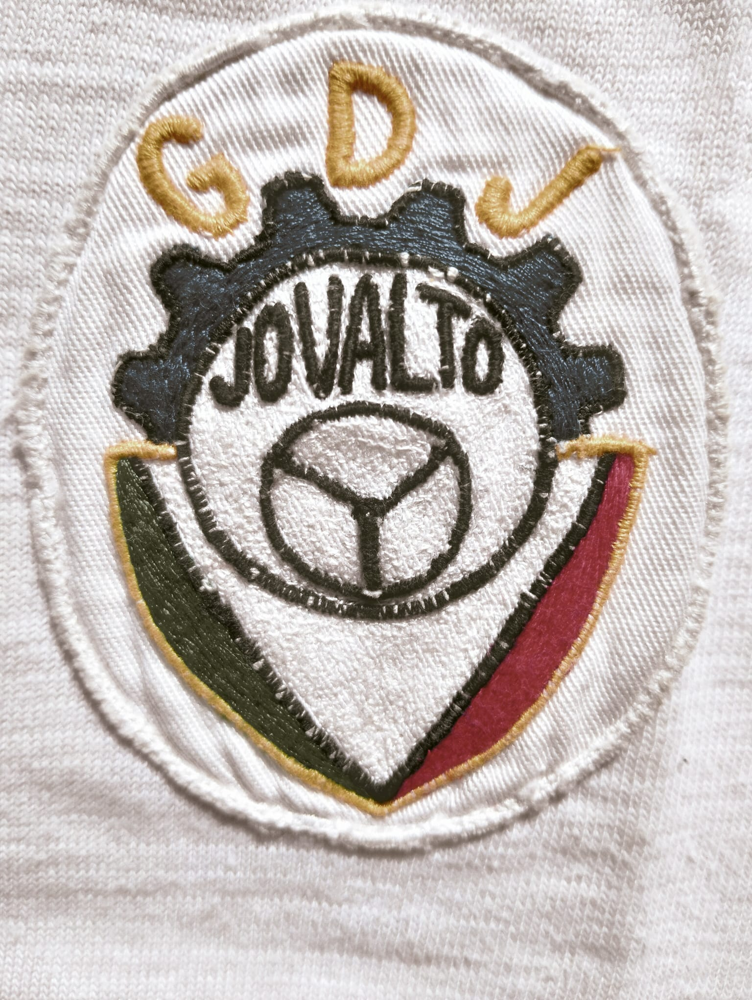
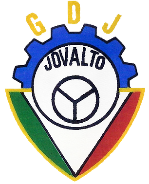

O clube
Grupo Desportivo Jovalto — desde 1965 em Campo de Ourique, Lisboa.
História
Fundado em 1965, o Grupo Desportivo Jovalto teve a sua sede histórica na Rua Freitas Gazul, 17-B, em Campo de Ourique. A constituição jurídica de 29 de junho de 1987, publicada no Diário da República em 17 de agosto de 1987, formalizou a associação; não corresponde à fundação.
Os fins estatutários registados são a promoção de atividades culturais, desportivas e recreativas entre os associados.
Pessoas
Os registos abaixo mantêm identidades distintas sempre que a documentação não permite estabelecer equivalências.
Um emblema histórico
As imagens representam o mesmo emblema, não uma evolução de logótipos. O bordado original é a referência histórica principal.

Primeira digitalização/reconstrução